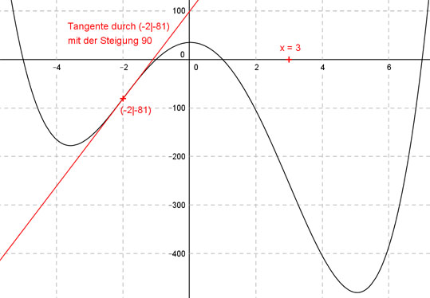

Aufgabe 84 Der Graph einer ganzrationalen Funktion 4. Grades hat einen Wendepunkt bei x = 3, einen im Punkt (-2|-81) mit der Steigung 90 und schneidet die x-Achse bei -1. Wie lautet seine Funktionsgleichung?  Allgemeine Form einer ganzrationalen Funktion 4. Grades: f(x) = ax4 + bx3 + cx2 + dx + e f’(x) = 4ax3 + 3bx2 + 2cx + d f’’(x) = 12ax2 + 6bx + 2c 5 Bedingungen: 1. Hat einen Wendepunkt bei x = 3 bedeutet: f’’(3) = 0 --> 12a * 32 + 6b * 3 + 2c = 0 --> 108a + 18b + 2c = 0 I 2. Hat einen Wendepunkt im Punkt (-2|-81) bedeutet zum einen: f(-2) = - 81 --> a * (-2)4 + b * (-2)3 + c * (-2)2 + d * (-2) + e = -81 --> 16a - 8b + 4c - 2d + e = -81 II 3. Hat einen Wendepunkt im Punkt (-2|-81) bedeutet zum anderen: f’’(-2) = 0 --> 12a * (-2)2 + 6b * (-2) + 2c = 0 --> 48a - 12b + 2c = 0 III 4. Hat einen Wendepunkt im Punkt (-2|-81) mit der Steigung 90 bedeutet: f’(-2) = 90 --> 4a * (-2)3 + 3b * (-2)2 + 2c * (-2) + d = 90 --> -32a + 12b - 4c + d = 90 IV 5. Schneidet die x-Achse bei -1 bedeutet: f(-1) = 0 --> a * (-1)4 + b * (-1)3 + c * (-1)2 + d * (-1) + e = 0 a - b + c - d + e = 0 V II + V * (-1) 16a - 8b + 4c - 2d + e = -81 -a + b - c + d - e = 0 ----------------------------- 15a - 7b + 3c - d = -81 VI IV + VI -32a + 12b - 4c + d = 90 15a - 7b + 3c - d = -81 -------------------------- -17a + 5b - c = 9 VII I + III * (-1) 108a + 18b + 2c = 0 -48a + 12b - 2c = 0 --------------------- 60a + 30b = 0 VIII III + VII * 2 48a - 12b + 2c = 0 -34a + 10b - 2c = 18 --------------------- 14a - 2b = 18 IX VIII + IX * 15 60a + 30b = 0 210a - 30b = 270 ----------------- 270a = 270 |:270 a = 1 a = 1 in VIII eingesetzt: 60 * 1 + 30b = 0 60 + 30b = 0 |-60 30b = -60 |:30 b = -2 a = 1 und b = - 2 in VII eingesetzt: -17 * 1 + 5 * (-2) - c = 9 -17 - 10 - c = 9 -27 - c = 9 |+27 -c = 36 |:(-1) c = -36 a = 1 und b = - 2 und c = - 36 in IV eingesetzt: -32 * 1 + 12 * (-2) - 4 * (-36) + d = 90 -32 - 24 + 144 + d = 90 88 + d = 90 |-88 d = 2 a = 1 und b = - 2 und c = - 36 und d = 2 in V eingesetzt: 1 - (-2) - 36 - 2 + e = 0 1 + 2 - 36 - 2 + e = 0 -35 + e = 0 |+35 e = 35 Gesuchte Funktionsgleichung: f(x) = x4 - 2x3 - 36x2 + 2x + 35